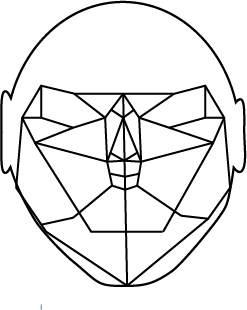

On the left, you see an image of a cat. On the right, you see a
gradient of the pixels that matter for defining an image of a cat.

Communication
Gap

Gap
We knew a face
mattered, but we
weren’t sure why
mattered, but we
weren’t sure why

We needed a way for humans to communicate
with the algorithm
with the algorithm
Solution 1: Gradients
A common way to solve this is to use
gradients. Gradients tell us which
pixels matter.
gradients. Gradients tell us which
pixels matter.


However, facial features are
composite. They don’t just exist in
one place. So, this approach did not
help us communicate.
composite. They don’t just exist in
one place. So, this approach did not
help us communicate.


On the left, you see a human mugshot. On the right, you see a
gradient of what pixels matter for the algorithm's prediction.
gradient of what pixels matter for the algorithm's prediction.

Solution 2: Morph
Pixels
Pixels
Humans are good at recognizing
differences between two similar
objects. We could try to morph
the face along the gradient and
see what changes.
differences between two similar
objects. We could try to morph
the face along the gradient and
see what changes.
Morphing along the gradient
produced a morphed image.We
need a morphed face in order to
compare.
produced a morphed image.We
need a morphed face in order to
compare.

We built a GAN to generate synthetic mugshots. This way, the algorithm
could learn what a "face" is in this context and keep its morphs consistent
with its definition of a face.
could learn what a "face" is in this context and keep its morphs consistent
with its definition of a face.


Solution 3: Morph
Faces
Faces
Now, we could morph into a new
face and compare what changed at a
low/high release probability.
face and compare what changed at a
low/high release probability.
We asked random subjects to identify the difference
Were the subjects right?
We had the subjects rate how well
groomed a set of real mugshots
were. Then we checked whether
those ratings predicted judge
choices.
groomed a set of real mugshots
were. Then we checked whether
those ratings predicted judge
choices.
Subjects identified several
differences between the morphed
faces. We labeled real mugshots
with those different facial features
and checked to see whether the
features were predictive. They were,
and dramatically so.
differences between the morphed
faces. We labeled real mugshots
with those different facial features
and checked to see whether the
features were predictive. They were,
and dramatically so.

Full-faced
Tired eyes
Amount of facial hair
Skin tone
Well-groomed
Hair non-specific
Image quality
Mouth
Skin-clarity
Age
Tired eyes
Amount of facial hair
Skin tone
Well-groomed
Hair non-specific
Image quality
Mouth
Skin-clarity
Age
Fullest to thinnest face
had a
had a
30%
difference in overall detention rate
Well-groomed (or full-faced) is only part of the story. More research needs
to be done to improve our method. In addition, this method can be applied
in other domains to help us develop new hypotheses in partnership with
algorithms.
to be done to improve our method. In addition, this method can be applied
in other domains to help us develop new hypotheses in partnership with
algorithms.